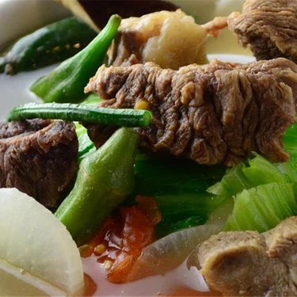

Beef Sinigang
For an easy, hearty and delicious meal to serve to your loved ones, you can’t go wrong with this Beef Ribs Sinigang recipe.
This is made even more special with the use of Knorr Sinigang sa Sampalok Original.

Ingredients:
- 4 cups Water
- 1 Onion , chopped
- 2 Tbsp Canola Oil
- 2 cloves Garlic , chopped
- 1 lb Beef Stew Meat , cut
- 2 Large Tomatoes , diced
- 1 bunch Chinese Long Beans , trimmed
- 2 bunches Baby Bok Choy , chopped, trimmed, rinsed
- 2 Medium Daikon Radishes , sliced, rinsed
- 2 Medium Eggplants , sliced, rinsed
- 1 pckg Tamarind Soup Base
Steps:
- Heat Canola Oil (2 Tbsp) in a medium stockpot. Sauté the Onion (1) and Garlic (2 cloves) until tender. Add Beef Stew Meat (1 lb) and sauté until browned.
- Pour in the Water (4 cups) . Bring water to a boil, add Tamarind Soup Base (1 pckg) , reduce heat, and simmer for 30 minutes.
- Add Tomatoes (2) , Chinese Long Beans (1 bunch) , Baby Bok Choy (2 bunches) , Daikon Radishes (2) , and Eggplants (2) . Simmer for 20 minutes. Stir occasionally.
- Serve with rice or enjoy by itself! Best served hot.